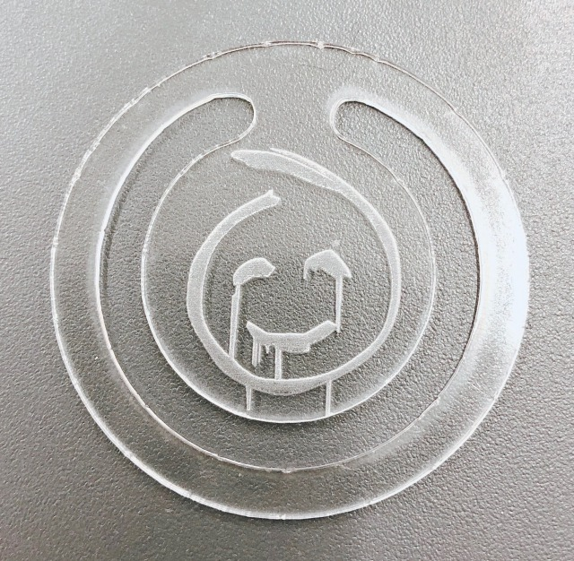
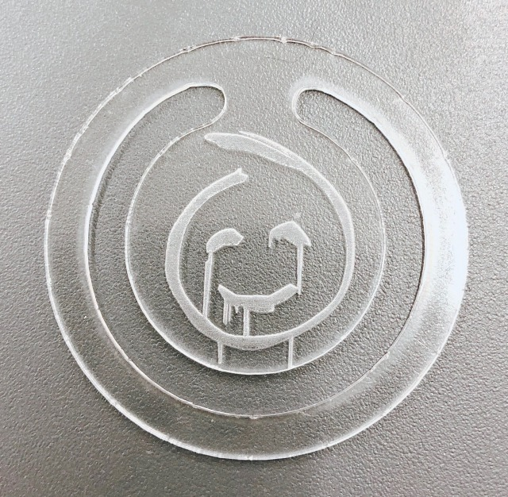
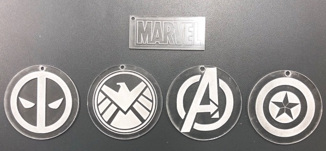
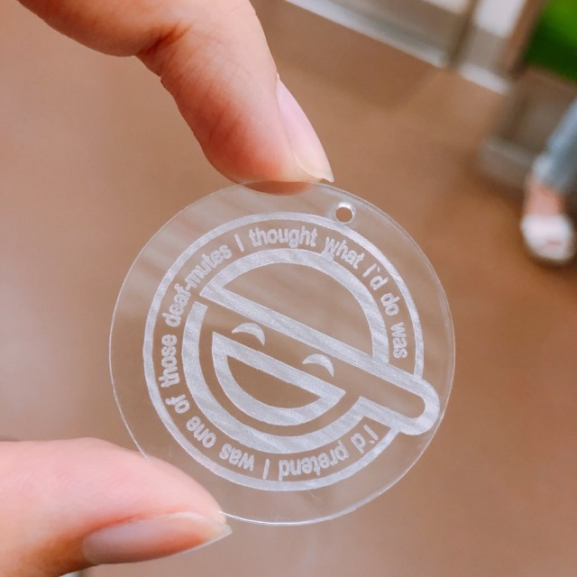
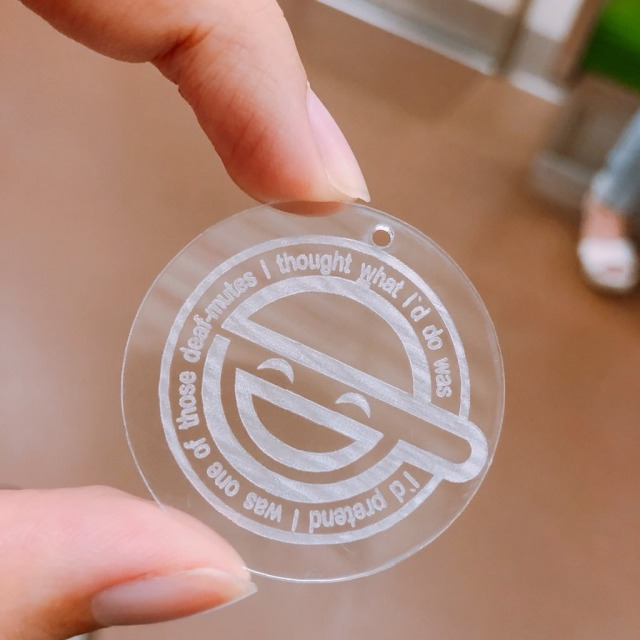

火災の原因になる素材の注意...塩ビ、合皮、反射するもの...etc tro tec は集塵機は勝手につく 機械に体重をかけてはいけない ノギスで切断するものの厚みを正確に計ること アルミのハニカム台は焦げやすいので何度もレザーが当たアないようなデータを作ること
電源の入れ方は鍵を指して回すだけ「ピーッピピピ ピーッ」となったら蓋を開けていい 材料を左上に置いてヘッドを材料の上のわかりやすい部分に持っていきます。 下の写真の手に持たれているものでレーザーの発射するヘッドと材料との距離を一定に測りきめます。 2枚目の写真のようにヘッドにかけ台を少しずつ近づけ 3枚目のように少し当たって倒れるギリギリまでハニカム台をあげましょう。


お試しで初めに作ったもの 文字のフォントを決めてパス化した後、丸と文字の重なった部分をパスファインダーで抜き取ったもの。
 


ドラマ、メンタリストの連続殺人鬼レッドジョンのマーク
一番上はMARVELのロゴ、左から...デッドプール、シールド、アベンジャーズ、キャプテンアメリカ


 
